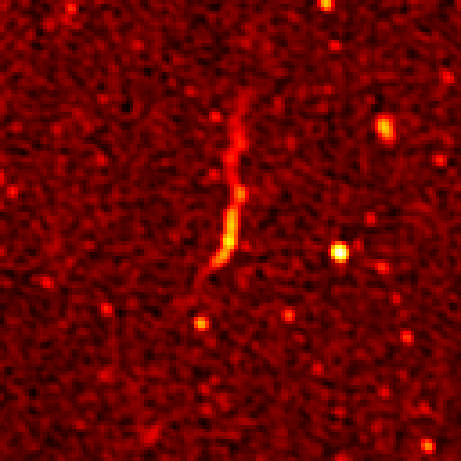

Image name: asdfsd
Coords: asdfsd

Image name: blah/p>
Coords: blah blah
Astronomaly is a machine learning framework for anomaly detection with active learning. We have applied it to a subset of MGCLS images and here display the top 210 most anomalous objects. Note that the objects are roughly grouped according to similar appearance and not in order of anomaly score. Objects that had been previously identified as particularly interesting by members of the team (before applying machine learning) are highlighted with a red border.
Image name: asdfsd
Coords: asdfsd
Image name: blah/p>
Coords: blah blah